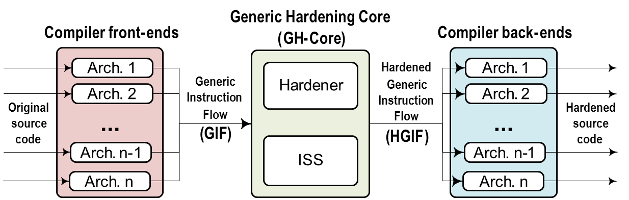

SHE: Software Hardening Environment
SHE: Software Hardening Environment (Entorno de "Endurecimiento" de Software)
- Es una herramienta para el desarrollo de software tolerante a fallos.
- Permite el diseño e implementación de técnicas de tolerancia a fallos basadas en software, las cuales pueden ser aplicadas a los programas de forma automática.
- La estrategia de "endurecimiento" (protección) está basada en reglas de transformación del código a bajo nivel, es decir, lenguaje ensamblador.
- Permite aplicar las técnicas software de tolerancia a fallos de forma selectiva, protegiendo sólo las partes críticas del programa. Así, se reducen los overheads y se ofrece mayor flexibilidad al diseñador para alcanzar la mejor solución de compromiso entre todos los requerimientos del sistema.
- Multiplataforma (probado en GNU/Linux y Windows).
Microprocesadores soportados
- Xilinx PicoBlaze 8-bit KCPSM3
- Xilinx PicoBlaze 8-bit KCPSM6
- Texas Instruments MSP430 16-bit
- Próximamente: ARM y RISC-V
Más información
-
Felipe Restrepo-Calle, Antonio Martínez-Álvarez, Sergio
Cuenca-Asensi, Antonio Jimeno. "Selective SWIFT-R: A
flexible software-based technique for soft error
mitigation in low-cost embedded systems". Journal of
Electronic Testing: Theory and Applications, vol. 29, no.
6, pp. 825-838, Dec., 2013. DOI:10.1007/s10836-013-5416-6.

-
Antonio Martínez-Álvarez, Sergio Cuenca-Asensi, Felipe
Restrepo-Calle, Francisco R. Palomo, Hipólito
Guzmán-Miranda, and Miguel A. Aguirre. "Compiler-Directed
Soft Error Mitigation for Embedded Systems," IEEE
Transactions on Dependable and Secure Computing, vol.9,
no.2, pp.159-172, March-April 2012. ISSN:1545-5971.
DOI=10.1109/TDSC.2011.54.
-
Sergio Cuenca-Asensi, Antonio Martínez-Álvarez, Felipe
Restrepo-Calle, Francisco R. Palomo, Hipólito
Guzmán-Miranda, and Miguel A. Aguirre. "A novel co-design
approach for soft errors mitigation in embedded systems".
IEEE Transactions on Nuclear Science, vol. 58, no. 3,
pp.1059-1065, June 2011. ISSN:0018-9499.
DOI:10.1109/TNS.2011.2112379.
